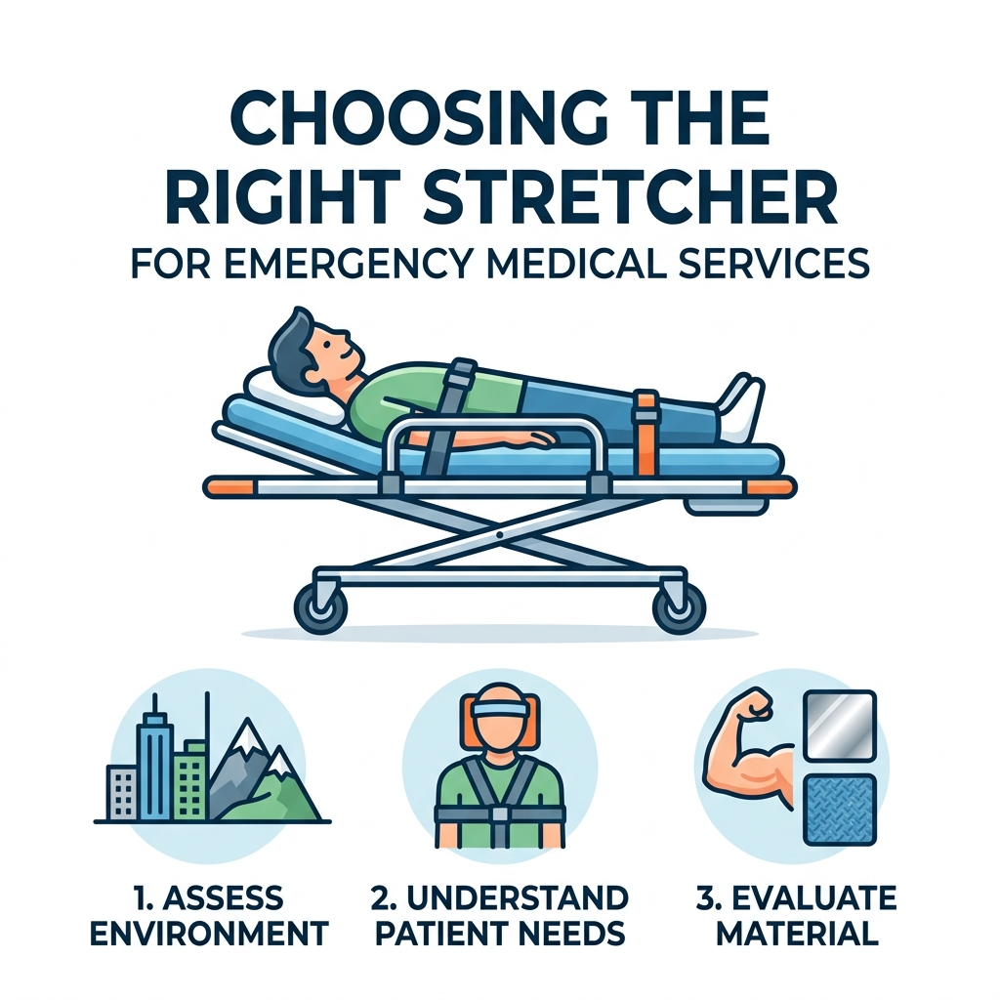

Mission-Ready: How to Select the Right Stretcher for Your Field Reality
JAN 20, 2026

Introduction
In an emergency, a stretcher is more than just a piece of transport equipment—it is the bridge between a critical injury and a successful recovery. For procurement managers in EMS, Occupational Health & Safety (OHS), and the Outdoor Industry, the challenge isn't just finding a stretcher; it’s finding one that doesn't fail when the environment gets tough.
This guide moves beyond technical specs to address the real-world pain points of field rescue and team safety.
1. The "Storage vs. Readiness" Dilemma (Corporate & Industrial Sites)
In corporate offices or busy industrial warehouses, space is a premium. The biggest pain point for safety managers is having equipment that is accessible but out of the way.
The Solution: Focus on Foldable/Simple Stretchers from our Classic Collection.
Why it works: These are lightweight and compact enough to fit in standard safety cabinets. For daily office slips or industrial minor injuries, you need a tool that a non-medical staff member can deploy in seconds without complex training.
The Benefit to You: Reduced response time and a workplace that meets safety audits without cluttering the floor.
2. The "Weight of the Mission" (Hiking, Camping & Tactical)
For Tactical Security and Expedition teams, every gram counts. Carrying a heavy, rigid stretcher miles into the wilderness is often impossible.
The Solution: High-strength Carbon Fiber or lightweight Aluminum Alloy foldable models.
Why it works: In Hiking & Camping scenarios, the stretcher must be "portable until needed." Our Elite-Guard Series focuses on portability without sacrificing weight capacity.
The Benefit to You: Your team stays agile and avoids fatigue, ensuring they have the energy left to perform the actual rescue when they reach the patient.
3. The "Secondary Injury" Risk (EMS & High-Impact Trauma)
In serious accidents where spinal trauma is suspected, the wrong stretcher can do more harm than the accident itself. This is the primary concern for EMS professionals.
The Solution: Spinal Boards (HDPE) and Scoop Stretchers.
Why it works: These tools focus on Total Immobilization. Using high-density polyethylene (HDPE) ensures the board is X-ray translucent, meaning the patient doesn't have to be moved again once they reach the hospital.
The Benefit to You: Seamless patient handover and minimized legal/medical risks associated with patient transport.
Strategic Sourcing: Why Global Standards Matter
Selecting a stretcher isn't just about the hardware; it’s about the peace of mind that comes with compliance. At GoSafeMed, we help you navigate this by ensuring all our rescue equipment meets CE, ISO 13485, and FDA standards.
Whether you are looking to expand your product line for recreational outdoor retail or sourcing for a specific OHS project, we consolidate these specialized resources—from Jiangsu to Guangdong—into one reliable flow.
Not sure which model fits your specific contract?
Contact our team for a technical consultation. We help you solve the procurement puzzle so you can focus on saving lives.